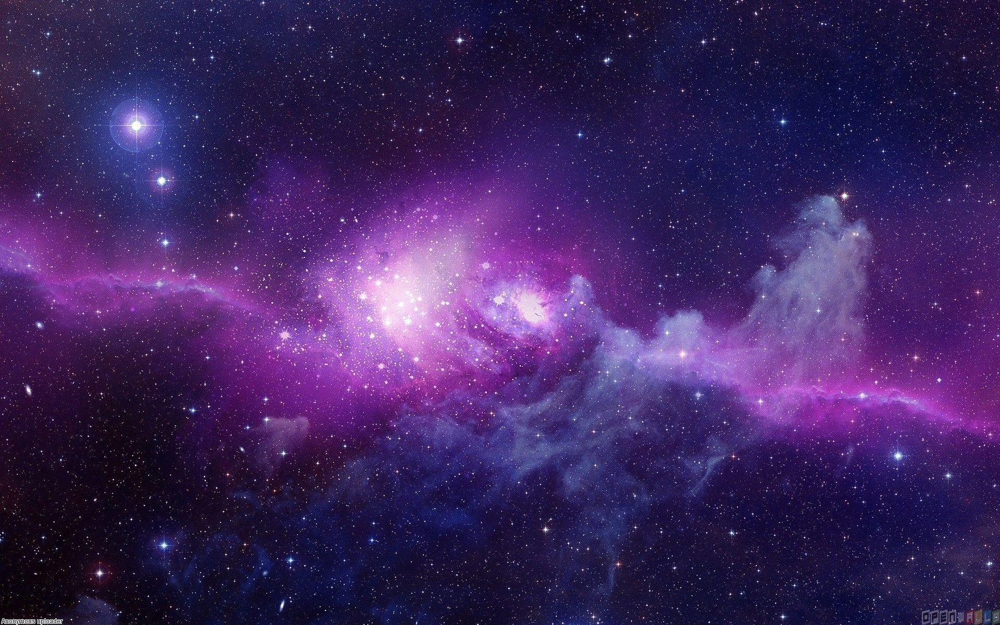

Windsurfing is an extreme watersport that combines elements of surfing and sailing. The key equipment for windsurfing includes a board, mast, boom, and sail. The size of the board and sail vary depending on the skill of the rider and weather conditions.
Types of windsurfing boards include freeride boards, which are built for mostly straight=line sailing and occasional turning, and wave boards, which are smaller and built for riding on and jumping breaking waves. IN 1984 windsurfing became an Olympic event.